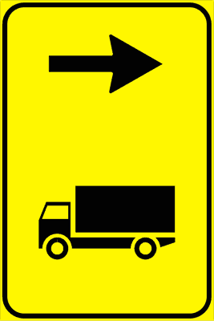

الباب 09: الإشارات التكميلية وعلامات ورش العمل وأشغال الطرق
الدليل الهندسي والشامل لكود السير الإيطالي: شواخص حواف الطرق (Delineatori di margine)، شواخص المنعطفات الحادة (Delineatori di curva stretta) في الاتجاه الواحد والاتجاهين، شواخص الأنفاق والجبال الثلجية، علامات ورش العمل الصفراء (Cantieri stradali)، الحواجز والمخاريط الفوسفورية (Barriere e Coni)، شاشات ورش العمل المتحركة، إشارات تنظيم السير المتناوب (Senso unico alternato)، ولوحات إغلاق وتوزيع المسارات.
🎮 محاكي شواخص حواف الطريق (Delineatori di Margine)
اختبر الفرق الحاسم في ألوان العواكس الليلية بين الطريق ذو الاتجاهين والطريق ذو الاتجاه الواحد والأنفاق

القاعدة الوزارية الصارمة: في الطرق ذات الاتجاهين (Doppio Senso)، يحمل العمود الأبيض عاكساً أحمر (Rosso) في جهة اليمين، وعاكساً أبيض (Bianco) في جهة اليسار لتنبيه السائق بحدود نهر الطريق وتجنب الخروج عن الأسفلت ليلاً.
🎮 محاكي شواخص المنعطفات الحادة والتقاطعات
قارن بين شاخص المنعطف في الاتجاه الواحد، المنعطف في الاتجاهين، وتقاطع حرف T

الوضع القانوني: شواخص متتابعة بأسهم حمراء على خلفية بيضاء ترشد السائق لمسار المنحنى الخطر في الطرق ذات الاتجاهين (Doppio Senso) وتنبه لخطورة التجاوز وقوة الطرد المركزي.
🎮 محاكي أدوات ورش العمل والمرور المتناوب
تعرف على أدوات تنظيم السير في مواقع الأشغال: الحاجز المغلق، المخاريط، والورشة المتحركة

الحكم التشريعي: حاجز طولي مخطط بالأحمر والأبيض يوضع عرضياً ليحظر قطعياً عبور أي مركبة بسبب أعمال حفر أو انهيارات، وتثبت عليه مصابيح حمراء ثابتة أو وامضة ليلاً.
🔍 مصفوفة المقارنة البصرية: فك التشابهات الأكثر إرباكاً في الامتحان
أبرز 4 مقارنات ثنائية يركز عليها واضعو الامتحان الوزاري للتمييز بين شواخص وعلامات الباب 09

منعطف الاتجاه الواحد
العلامة: أسهم بيضاء على خلفية سوداء عاكسة.
الدلالة: السير في اتجاه واحد فقط ولا توجد حركة سير قادمة في الاتجاه المعاكس.
منعطف الاتجاهين
العلامة: أسهم حمراء على خلفية بيضاء عاكسة.
الدلالة: الطريق يسير في الاتجاهين ويحظر قطعياً غزو المسار المعاكس في المنحنى.

المخروط البرتقالي
الاستخدام: للأعمال السريعة وقصيرة المدى (Breve durata) وتحديد انحراف المسارات المؤقتة الفورية.
الحاجز المخطط العرضي
الاستخدام: لإغلاق مسار أو كامل الطريق عرضياً ومنع المرور التام، مع تزويده بإضاءة حمراء ليلاً.

لوحة ترقيم المنعطفات الحادة
Pannello integrativo tornante (Figura 144)لوحة مكملة توضع أسفل إشارة المنعطف الخطر (Curva pericolosa) في الطرق الجبلية؛ تشير إلى وجود منعطف حاد جداً (Tornante) وتحدد رقمه التتابعي أو عدد المنعطفات المتتالية لتنبيه السائق لضرورة تخفيض السرعة واستخدام الغيار المناسب.
- • Il pannello raffigurato indica la vicinanza di una curva stretta
Il pannello raffigurato indica la vicinanza di una curva stretta - • Il pannello raffigurato indica il numero progressivo di una curva pericolosa
Il pannello raffigurato indica il numero progressivo di una curva pericolosa - • Il pannello raffigurato indica il primo di una serie di tornanti (curve a raggio ridotto)
Il pannello raffigurato indica il primo di una serie di tornanti (curve a raggio ridotto) - • Il pannello raffigurato, in una serie di tornanti, ne indica il numero progressivo
Il pannello raffigurato, in una serie di tornanti, ne indica il numero progressivo
- • Il pannello raffigurato indica una zona a circolazione rotatoria (خطأ FALSO)
- • Il pannello raffigurato indica che fra un chilometro troveremo un tornante (خطأ FALSO)
- • Il pannello raffigurato indica i chilometri da fare per poter tornare indietro (خطأ FALSO)
- • Il pannello raffigurato indica il numero di incroci superati (خطأ FALSO)

اتجاه إلزامي لمركبات النقل الثقيل لورش العمل
Direzione obbligatoria autocarri in cantiere (Figura 251)إشارة مربعة بخلفية صفراء تحمل رمز شاحنة وسهم اتجاه إلزامي؛ تفرض على مركبات نقل البضائع التي يزيد وزنها الإجمالي عن 3.5 طن اتباع المسار المحدد للدخول أو الخروج من موقع ورش العمل وأشغال الطرق وتفادي عرقلة السير العادي.
- • Il segnale raffigurato indica la direzione consigliata per gli autocarri di massa complessiva a pieno carico superiore a 3,5 tonnellate
Il segnale raffigurato indica la direzione consigliata per gli autocarri di massa complessiva a pieno carico superiore a 3,5 tonnellate - • Il segnale raffigurato indica la categoria di veicoli a cui è consigliata la svolta
Il segnale raffigurato indica la categoria di veicoli a cui è consigliata la svolta - • Il segnale raffigurato è installato nel punto della deviazione consigliata per autocarri che superano 3,5 tonnellate
Il segnale raffigurato è installato nel punto della deviazione consigliata per autocarri che superano 3,5 tonnellate - • Il segnale raffigurato può essere preceduto da un segnale di preavviso
Il segnale raffigurato può essere preceduto da un segnale di preavviso
- • Il segnale raffigurato indica che è vietato svoltare a sinistra (خطأ FALSO)
- • Il segnale raffigurato indica un'area di sosta per gli autocarri (خطأ FALSO)
- • Il segnale raffigurato indica la direzione da seguire per arrivare in una discarica (خطأ FALSO)
- • Il segnale raffigurato indica una strada a senso unico sulla destra, riservata solo agli autocarri (خطأ FALSO)

إشارة ورش العمل وأشغال الطرق المؤقتة
Lavori in corso (Figura 275)إشارة خطر مثلثة ذات خلفية صفراء برمز عامل يحفر؛ تعلن عن الاقتراب من موقع ورش عمل أو صيانة على الطريق أو بجواره، وتلزم بتخفيض فوري للسرعة والانتباه لوجود عمال ومعدات أو بقايا ركام وأتربة على نهر الطريق.
- • Il segnale raffigurato preavvisa lavori in corso
Il segnale raffigurato preavvisa lavori in corso - • Il segnale raffigurato preavvisa cantieri di lavoro
Il segnale raffigurato preavvisa cantieri di lavoro - • Il segnale raffigurato preavvisa eventuali depositi temporanei di materiali o macchinari
Il segnale raffigurato preavvisa eventuali depositi temporanei di materiali o macchinari - • Il segnale raffigurato preavvisa la eventuale presenza di uomini che lavorano presso o sulla carreggiata
Il segnale raffigurato preavvisa la eventuale presenza di uomini che lavorano presso o sulla carreggiata
- • Il segnale raffigurato impone di dare la precedenza ai veicoli che escono dal cantiere (خطأ FALSO)
- • Il segnale raffigurato preavvisa l'obbligo di dare la precedenza ai veicoli che provengono in senso opposto (خطأ FALSO)
- • Il segnale raffigurato obbliga a invertire il senso di marcia nelle ore di lavoro degli operai (خطأ FALSO)
- • Il segnale raffigurato obbliga a dare la precedenza agli addetti ai lavori (خطأ FALSO)
الحاجز العرضي المخطط لإغلاق الطريق
Barriera normale a strisce bianche e rosse (Figura 276)حاجز طولي مخطط بأشرطة بيضاء وحمراء عاكسة؛ يوضع عرضياً لإغلاق مسار أو كامل نهر الطريق أمام حركة المرور بسبب ورش عمل أو حوادث أو انهيارات، ويحظر قطعياً تجاوزه أو المرور من خلفه.
- • La barriera raffigurata segnala un'area occupata da un cantiere stradale
La barriera raffigurata segnala un'area occupata da un cantiere stradale - • La barriera raffigurata delimita un'area dove si stanno svolgendo lavori stradali
La barriera raffigurata delimita un'area dove si stanno svolgendo lavori stradali - • La barriera raffigurata è posta ai bordi di un cantiere stradale
La barriera raffigurata è posta ai bordi di un cantiere stradale - • La barriera raffigurata può utilizzarsi nei passaggi a livello quando le sbarre sono guaste
La barriera raffigurata può utilizzarsi nei passaggi a livello quando le sbarre sono guaste
- • La barriera raffigurata si trova all'ingresso di un'autorimessa (خطأ FALSO)
- • La barriera raffigurata segnala un parcheggio riservato ai veicoli per lavori stradali (خطأ FALSO)
- • La barriera raffigurata si trova nei caselli autostradali per delimitare le corsie (خطأ FALSO)
- • La barriera raffigurata segnala una curva pericolosa (خطأ FALSO)
المخاريط العاكسة لتحديد المسارات المؤقتة
Cono di delimitazione (Figura 278)مخروط بلاستيكي برتقالي بمطاط أبيض عاكس؛ يستخدم لتحديد المسارات المؤقتة، الفصل بين اتجاهات السير في أعمال الصيانة قصيرة المدى، أو تحديد مسار تحويلة عاجلة. يتميز بسهولة النقل والتركيب الفوري.
- • Il cono raffigurato può delimitare zone di lavoro di breve durata
Il cono raffigurato può delimitare zone di lavoro di breve durata - • Il cono raffigurato si può usare per segnalare deviazioni provvisorie
Il cono raffigurato si può usare per segnalare deviazioni provvisorie - • Il cono raffigurato si può usare per indicare aree interessate da incidenti
Il cono raffigurato si può usare per indicare aree interessate da incidenti - • Il cono raffigurato può indicare separazione provvisoria dei sensi di marcia
Il cono raffigurato può indicare separazione provvisoria dei sensi di marcia
- • Il cono raffigurato si usa per indicare un parcheggio riservato (خطأ FALSO)
- • Il cono raffigurato si può usare in presenza di lavori stradali superiori a 10 giorni (خطأ FALSO)
- • Il cono raffigurato si usa su strade dove avvengono abbondanti nevicate (خطأ FALSO)
- • Il cono raffigurato separa la carreggiata dalla pista ciclabile (خطأ FALSO)

لوحة ممر المركبات بجانب ورش العمل
Passaggio obbligatorio per veicoli operativi (Figura 279)لوحة توجيهية صفراء بها أسهم ترشد السائقين للمسار المفتوح للعبور بجانب منطقة العمل مع تحذيرهم من نقاط خروج ودخول آليات الصيانة الثقيلة.
- • Il segnale raffigurato può essere posto sui veicoli per lavori stradali, fermi o in lento movimento
Il segnale raffigurato può essere posto sui veicoli per lavori stradali, fermi o in lento movimento - • Il segnale raffigurato indica il lato dal quale il veicolo su cui è posto deve essere sorpassato
Il segnale raffigurato indica il lato dal quale il veicolo su cui è posto deve essere sorpassato - • Il segnale raffigurato può essere posto sui veicoli per la manutenzione stradale in sosta sulla carreggiata
Il segnale raffigurato può essere posto sui veicoli per la manutenzione stradale in sosta sulla carreggiata - • Il segnale raffigurato può essere posto su alcuni veicoli per lavori stradali, che procedono a bassa velocità
Il segnale raffigurato può essere posto su alcuni veicoli per lavori stradali, che procedono a bassa velocità
- • Il segnale raffigurato indica di sorpassare l'ostacolo sulla sinistra (خطأ FALSO)
- • Il segnale raffigurato indica di svoltare subito a destra (خطأ FALSO)
- • Il segnale raffigurato indica corsia di destra chiusa per manutenzione stradale (خطأ FALSO)
- • Il segnale raffigurato obbliga a sostare a destra (خطأ FALSO)

ورشة العمل المتحركة مع سهم إلزامي
Cantiere mobile con segnale di passaggio obbligatorio (Figura 280)شاحنة صيانة تحمل لوحة صفراء كبيرة وسهماً ضوئياً وامضاً يشير للاتجاه الإلزامي للتجاوز؛ تتحرك ببطء لتنفيذ أعمال دهان الخطوط أو تنظيف الحواف أو إصلاح الإنارة وتلزم السائقين بالانتقال للمسار المجاور.
- • Il segnale raffigurato preavvisa un cantiere mobile con strettoia a sinistra
Il segnale raffigurato preavvisa un cantiere mobile con strettoia a sinistra - • Il segnale raffigurato può essere installato su un veicolo per preavvisare un cantiere stradale
Il segnale raffigurato può essere installato su un veicolo per preavvisare un cantiere stradale - • Il segnale raffigurato indica le corsie disponibili per la circolazione
Il segnale raffigurato indica le corsie disponibili per la circolazione - • Il segnale raffigurato indica una diminuzione da tre a due corsie
Il segnale raffigurato indica una diminuzione da tre a due corsie
- • Il segnale raffigurato indica quanti veicoli possono transitare contemporaneamente (خطأ FALSO)
- • Il segnale raffigurato indica una piazzola di sosta sul lato sinistro (خطأ FALSO)

لوحة تحويل مسار مركبات النقل الثقيل
Deviazione per mezzi pesanti (Figura 283)لوحة إرشادية ذات خلفية صفراء ترشد سائقي الشاحنات ومركبات الوزن الثقيل إلى مسار بديل إجباري لتجنب المرور في موقع ورشة العمل أو الجسور الضعيفة.
- • Il segnale raffigurato indica ai veicoli di massa effettiva superiore a 7 tonnellate diretti a Lucca di cambiare strada
Il segnale raffigurato indica ai veicoli di massa effettiva superiore a 7 tonnellate diretti a Lucca di cambiare strada - • Il segnale raffigurato consente agli autocarri di massa a pieno carico inferiore a 7 tonnellate di proseguire diritto
Il segnale raffigurato consente agli autocarri di massa a pieno carico inferiore a 7 tonnellate di proseguire diritto - • Il segnale raffigurato non consente ai veicoli di massa effettiva superiore a 7 tonnellate diretti a Lucca di proseguire diritto
Il segnale raffigurato non consente ai veicoli di massa effettiva superiore a 7 tonnellate diretti a Lucca di proseguire diritto - • Il segnale raffigurato indica una limitazione di transito su un tratto di strada per i veicoli di massa effettiva superiore a 7 tonnellate
Il segnale raffigurato indica una limitazione di transito su un tratto di strada per i veicoli di massa effettiva superiore a 7 tonnellate
- • Il segnale raffigurato indica, a tutti i veicoli, che non è possibile proseguire diritto per Lucca (خطأ FALSO)
- • Il segnale raffigurato obbliga tutti i veicoli a svoltare a destra al bivio seguente (خطأ FALSO)
- • Il segnale raffigurato vieta il sorpasso agli autoveicoli di massa totale superiore a 7 tonnellate (خطأ FALSO)
- • Il segnale raffigurato vieta il transito ai veicoli che superano 7 metri di lunghezza (خطأ FALSO)

لوحة إغلاق مسار وانحياز حركة السير
Corsia chiusa per lavori e riduzione corsie (Figura 285)لوحة صفراء توضح انخفاض عدد مسارات الطريق من مسارين إلى مسار واحد أو من 3 إلى 2 بسبب ورش العمل؛ تلزم السائقين بالاندماج المبكر في المسار المفتوح بنظام التناوب (Cerniera).
- • Il segnale raffigurato indica la chiusura della corsia di destra per lavori in corso
Il segnale raffigurato indica la chiusura della corsia di destra per lavori in corso - • Il segnale raffigurato indica una diminuzione da due a una corsia di marcia
Il segnale raffigurato indica una diminuzione da due a una corsia di marcia - • Il segnale raffigurato è posto in vicinanza di un cantiere stradale
Il segnale raffigurato è posto in vicinanza di un cantiere stradale - • Il segnale raffigurato può essere completato con pannello che indica la distanza dal punto di chiusura della corsia
Il segnale raffigurato può essere completato con pannello che indica la distanza dal punto di chiusura della corsia
- • Il segnale raffigurato indica la possibilità di sorpassare a destra (خطأ FALSO)
- • Il segnale raffigurato preannuncia uno svincolo che consente l'inversione di marcia (خطأ FALSO)
- • Il segnale raffigurato si trova in vicinanza di un incrocio (خطأ FALSO)
- • Il segnale raffigurato indica una piazzola per la fermata degli autobus (خطأ FALSO)

لوحة المسارات المتاحة وتوزيع اتجاهات السير
Uso delle corsie disponibili in presenza di cantiere (Figura 288)لوحة صفراء تحدد بدقة توزيع المسارات المؤقتة وكيفية استخدامها وتفرض على فئات معينة من المركبات التزام مسارات محددة طبقاً لعرض المسار أو حمولة الطريق.
- • Il segnale raffigurato, posto in presenza di lavori stradali, indica alle categorie di veicoli quali corsie possono occupare
Il segnale raffigurato, posto in presenza di lavori stradali, indica alle categorie di veicoli quali corsie possono occupare - • Il segnale raffigurato viene utilizzato per indicare l'uso delle corsie
Il segnale raffigurato viene utilizzato per indicare l'uso delle corsie - • Il segnale raffigurato indica ai veicoli su quali corsie debbono circolare
Il segnale raffigurato indica ai veicoli su quali corsie debbono circolare - • Il segnale raffigurato indica agli autocarri di massa complessiva superiore a 3,5 tonnellate quale corsia debbono percorrere
Il segnale raffigurato indica agli autocarri di massa complessiva superiore a 3,5 tonnellate quale corsia debbono percorrere
- • Il segnale raffigurato indica l'avvicinarsi di un casello autostradale (خطأ FALSO)
- • Il segnale raffigurato obbliga gli autocarri a circolare per file parallele (خطأ FALSO)
- • Il segnale raffigurato indica che gli autocarri debbono solo sorpassare a destra (خطأ FALSO)
- • Il segnale raffigurato vieta ai motocicli di circolare sulla corsia di sinistra (خطأ FALSO)
شواخص المنعطفات الحادة في الطرق ذات الاتجاه الواحد
Delineatori modulari di curva per senso unico (Figura 289)سلسلة شواخص متتالية تحمل رؤوس أسهم بيضاء على خلفية سوداء عاكسة؛ تستخدم حصراً في الطرق ذات الاتجاه الواحد (Senso Unico) أو منحنيات وصلات الأوتوستراد لتوضيح اتجاه وانحناء المنعطف ليلاً وفي الضباب.
- • I delineatori raffigurati sono usati ai lati della carreggiata di strade a senso unico
I delineatori raffigurati sono usati ai lati della carreggiata di strade a senso unico - • I delineatori raffigurati sono dei segnali complementari
I delineatori raffigurati sono dei segnali complementari - • I delineatori raffigurati sono posti ai margini di una strada o di una carreggiata a senso unico
I delineatori raffigurati sono posti ai margini di una strada o di una carreggiata a senso unico - • I delineatori raffigurati servono a visualizzare meglio l'andamento della strada
I delineatori raffigurati servono a visualizzare meglio l'andamento della strada
- • I delineatori raffigurati sono posti su strada a doppio senso (خطأ FALSO)
- • I delineatori raffigurati si trovano prima di un attraversamento pedonale (خطأ FALSO)
- • I delineatori raffigurati sono posti al centro della carreggiata (خطأ FALSO)
- • I delineatori raffigurati dividono la carreggiata in corsie (خطأ FALSO)
شواخص حواف وجوانب الطريق العادية
Delineatori normali di margine (Figura 290)أعمدة بيضاء مثبتة على جانبي الطريق؛ تحمل عاكساً أحمر (Rosso) على الجانب الأيمن وعاكساً أبيض (Bianco) على الجانب الأيسر في الطرق ذات الاتجاهين؛ لتحديد حدود نهر الطريق بدقة ليلاً.
- • I delineatori raffigurati sono utili soprattutto nei casi di scarsa visibilità
I delineatori raffigurati sono utili soprattutto nei casi di scarsa visibilità - • I delineatori raffigurati sono dei segnali complementari
I delineatori raffigurati sono dei segnali complementari - • I delineatori raffigurati sono posti ai margini di una strada a doppio senso
I delineatori raffigurati sono posti ai margini di una strada a doppio senso - • I delineatori raffigurati servono a visualizzare meglio l'andamento della strada
I delineatori raffigurati servono a visualizzare meglio l'andamento della strada
- • I delineatori raffigurati sono utili solo nelle ore notturne (خطأ FALSO)
- • I delineatori raffigurati vengono posti a distanza di almeno 100 metri l’uno dall’altro (خطأ FALSO)
- • I delineatori raffigurati sono posti al centro della carreggiata (خطأ FALSO)
- • I delineatori raffigurati dividono la carreggiata in corsie (خطأ FALSO)

شواخص حواف الأنفاق المضيئة
Delineatori di margine per gallerie (Figura 291)عناصر عاكسة مثبتة على جدران الأنفاق والممرات المغطاة؛ تكون عاكسة باللون الأصفر في الأنفاق ذات الاتجاه الواحد، أو بلوني الأحمر والأبيض في الأنفاق ذات الاتجاهين لتوضيح حيز السير الآمن وتفادي الاصطدام بالجدران.
- • Il delineatore raffigurato è posto ai lati delle gallerie a senso unico
Il delineatore raffigurato è posto ai lati delle gallerie a senso unico - • Il delineatore raffigurato è un segnale complementare posto nelle gallerie a senso unico
Il delineatore raffigurato è un segnale complementare posto nelle gallerie a senso unico - • Il delineatore raffigurato si può trovare anche per evidenziare deviazioni o strettoie della carreggiata
Il delineatore raffigurato si può trovare anche per evidenziare deviazioni o strettoie della carreggiata - • Il delineatore raffigurato è un segnale complementare
Il delineatore raffigurato è un segnale complementare
- • Il delineatore raffigurato è usato per indicare un incrocio a senso unico (خطأ FALSO)
- • Il delineatore raffigurato indica una strada chiusa (خطأ FALSO)
- • Il delineatore raffigurato è posto al centro della carreggiata per indicare un ostacolo (خطأ FALSO)
- • Il delineatore raffigurato divide la carreggiata in corsie (خطأ FALSO)

شواخص الطرق الجبلية المعرضة لتراكم الثلوج
Delineatori per strade di montagna innevate (Figura 292)أعمدة طويلة جداً ومخططة بالأصفر والأسود أو الأحمر والأبيض؛ تثبت على أطراف الطرق الجبلية لتظل مرئية بوضوح حتى عند تراكم الثلوج الكثيفة، وترشد كاسحات الثلوج والسائقين لمسار الطريق وتمنع السقوط في المنحدرات.
- • Il delineatore raffigurato è posto ai lati della carreggiata nelle strade di montagna soggette ad innevamento
Il delineatore raffigurato è posto ai lati della carreggiata nelle strade di montagna soggette ad innevamento - • Il delineatore raffigurato è un segnale complementare
Il delineatore raffigurato è un segnale complementare - • Il delineatore raffigurato è posto ai lati della carreggiata su strade di montagna
Il delineatore raffigurato è posto ai lati della carreggiata su strade di montagna - • Il delineatore raffigurato viene utilizzato per rendere meglio visibili i bordi della carreggiata di una strada innevata
Il delineatore raffigurato viene utilizzato per rendere meglio visibili i bordi della carreggiata di una strada innevata
- • Il delineatore raffigurato è posto alla fermata degli autobus (خطأ FALSO)
- • Il delineatore raffigurato è posto al centro della carreggiata (خطأ FALSO)
- • Il delineatore raffigurato si trova in vicinanza di un attraversamento pedonale (خطأ FALSO)
- • Il delineatore raffigurato è usato come paletto di ancoraggio per lasciare in sosta le biciclette (خطأ FALSO)
شواخص المنعطفات الحادة في الطرق ذات الاتجاهين
Delineatore modulare di curva stretta a doppio senso (Figura 293)شواخص تحمل أسهم chevron حمراء على خلفية بيضاء؛ تثبت متتابعة على القوس الخارجي للمنعطفات الحادة الخطيرة في الطرق ذات الاتجاهين (Doppio Senso) لتوجيه نظر السائق ومساعدته في تقدير زاوية الانحناء.
- • Il delineatore raffigurato è posto nelle curve strette e con mancanza di visibilità
Il delineatore raffigurato è posto nelle curve strette e con mancanza di visibilità - • Il delineatore raffigurato si trova, di norma, dopo il segnale CURVA PERICOLOSA A SINISTRA
Il delineatore raffigurato si trova, di norma, dopo il segnale CURVA PERICOLOSA A SINISTRA - • Il delineatore raffigurato, se di colore bianco e rosso, indica una curva provvisoria a sinistra
Il delineatore raffigurato, se di colore bianco e rosso, indica una curva provvisoria a sinistra - • Il delineatore raffigurato è usato per segnalare una curva pericolosa
Il delineatore raffigurato è usato per segnalare una curva pericolosa
- • Il delineatore raffigurato indica un cantiere stradale (خطأ FALSO)
- • Il delineatore raffigurato segnala una strada dove si trovano salite e discese (خطأ FALSO)
- • Il delineatore raffigurato indica gli ostacoli sporgenti sulla carreggiata (خطأ FALSO)
- • Il delineatore raffigurato segnala una curva pericolosa a destra (خطأ FALSO)

شاخص التقاطعات المغلقة على شكل حرف T
Delineatore per incrocio a T (Figura 294)لوحة عريضة مخططة بأسهم بيضاء وحمراء تشير في كلا الاتجاهين الأيمن والأيسر؛ توضع مباشرة أمام السائق القادم في نهاية طريق مغلق يفرض الانعطاف إما يميناً أو يساراً ويحظر التقدم للأمام مباشرة.
- • Il delineatore raffigurato indica di svoltare a destra o a sinistra
Il delineatore raffigurato indica di svoltare a destra o a sinistra - • Il delineatore raffigurato ha le punte delle frecce che segnalano le direzioni possibili
Il delineatore raffigurato ha le punte delle frecce che segnalano le direzioni possibili - • Il delineatore raffigurato è installato ad un incrocio a forma di "T"
Il delineatore raffigurato è installato ad un incrocio a forma di "T" - • Il delineatore raffigurato è posto in un incrocio dove non è possibile proseguire diritto
Il delineatore raffigurato è posto in un incrocio dove non è possibile proseguire diritto
- • Il delineatore raffigurato indica un passaggio a livello (خطأ FALSO)
- • Il delineatore raffigurato indica un ponte mobile (خطأ FALSO)
- • Il delineatore raffigurato indica una strada chiusa per lavori in corso (خطأ FALSO)
- • Il delineatore raffigurato indica un aumento del numero di corsie della strada (خطأ FALSO)

الشواخص التتابعية للمنحنيات والتحويلات المؤقتة
Delineatori modulari per curve provvisorie (Figura 295)لوحات إرشادية بألوان أصفر وأسود أو أصفر وأحمر؛ تثبت في مسارات التحويلات المؤقتة وحول ورش العمل لتحذير السائق من انحناء مسار التحويلة بصورة حادة ومفاجئة.
- • Il delineatore raffigurato si trova in serie di più elementi per evidenziare una curva pericolosa
Il delineatore raffigurato si trova in serie di più elementi per evidenziare una curva pericolosa - • Il delineatore raffigurato è un segnale complementare
Il delineatore raffigurato è un segnale complementare - • Il delineatore raffigurato è usato per migliorare la visibilità delle curve
Il delineatore raffigurato è usato per migliorare la visibilità delle curve - • Il delineatore raffigurato indica una curva pericolosa a destra
Il delineatore raffigurato indica una curva pericolosa a destra
- • Il delineatore raffigurato indica una curva pericolosa a sinistra (خطأ FALSO)
- • Il delineatore raffigurato si trova 150 metri prima di una curva (خطأ FALSO)
- • Il delineatore raffigurato è posto all'ingresso di una galleria (خطأ FALSO)
- • Il delineatore raffigurato viene usato nei passaggi a livello, quando le barriere sono guaste (خطأ FALSO)

الإشعار المسبق بإشارة المرور لورش العمل
Preavviso semaforo temporaneo di cantiere (Figura 297)إشارة خطر مثلثة صفراء بداخلها رمز إشارة مرور ثلاثية وقرص أصفر وامض في المنتصف؛ تعلن عن الاقتراب من إشارة مرور ضوئية مؤقتة تنظم السير بنظام الاتجاه المتناوب (Senso unico alternato) في موقع عمل ضيق.
- • Il segnale raffigurato preavvisa un impianto semaforico in presenza di un cantiere stradale
Il segnale raffigurato preavvisa un impianto semaforico in presenza di un cantiere stradale - • Il segnale raffigurato si può trovare sia su strade urbane che extraurbane
Il segnale raffigurato si può trovare sia su strade urbane che extraurbane - • Il segnale raffigurato può essere posto prima del restringimento di carreggiata per lavori in corso
Il segnale raffigurato può essere posto prima del restringimento di carreggiata per lavori in corso - • Nel segnale raffigurato il disco al centro è a luce gialla lampeggiante
Nel segnale raffigurato il disco al centro è a luce gialla lampeggiante
- • Il segnale raffigurato preavvisa un semaforo che regola il traffico in transito su ponti mobili o girevoli (خطأ FALSO)
- • Il segnale raffigurato preavvisa la presenza di un segnale di STOP (خطأ FALSO)
- • Il segnale raffigurato preavvisa l'accesso al pontile d'imbarco delle navi traghetto (خطأ FALSO)
- • Il segnale raffigurato preavvisa un attraversamento ferroviario senza barriere (خطأ FALSO)

شاخص تحديد العوائق الرأسية وجزر المرور
Delineatore di ostacolo verticale (Figura 299)لوحة مستطيلة مخططة بأشرطة مائلة بيضاء وسوداء أو صفراء وسوداء؛ تثبت مباشرة على العوائق الرأسية كأعمدة الجسور، مداخل الأنفاق، أو حواف الجزر المرورية لتنبيه السائق لوجود عائق في نهر الطريق.
- • Il delineatore raffigurato viene utilizzato per segnalare un ostacolo
Il delineatore raffigurato viene utilizzato per segnalare un ostacolo - • Il delineatore raffigurato viene posto all'interno della carreggiata, in presenza di un ostacolo
Il delineatore raffigurato viene posto all'interno della carreggiata, in presenza di un ostacolo - • Il delineatore raffigurato è rifrangente, per una migliore visibilità nelle ore notturne
Il delineatore raffigurato è rifrangente, per una migliore visibilità nelle ore notturne - • Il delineatore raffigurato può segnalare l'inizio di un'isola di traffico
Il delineatore raffigurato può segnalare l'inizio di un'isola di traffico
- • Il delineatore raffigurato è dotato di luce propria (خطأ FALSO)
- • Il delineatore raffigurato è posto ai lati della strada (خطأ FALSO)
- • Il delineatore raffigurato divide la carreggiata da una pista ciclabile (خطأ FALSO)
- • Il delineatore raffigurato presegnala una corsia riservata agli autobus o taxi (خطأ FALSO)